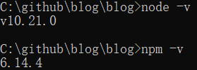

[教程]怎样搭建这样的blog
这里的 blog 文档使用 Gitbook 构建，并部署到 Github Pages.
参考：打造完美写作系统：Gitbook+Github Pages+Github Actions 这里没有使用 Github Actions 自动导出
本教程只针对 windows 平台
相关工具：
- markdown
- gitbook
- git/github
- github pages
准备工作
确认自己拥有一个 Github 账号。
确认装有 NodeJS (4.0及以上版本)。可以在 cmd 中用
node -v确认版本号。太新的版本似乎会出问题，笔者使用的版本是 v10.21.0，同时也推荐在中文官网（https://nodejs.org/zh-cn/ ）下载安装。安装 NodeJS 时会自动附带 npm，用于后续安装 gitbook。
利用 npm 安装 gitbook:
npm install -g gitbook-cli
开始
新建 github 仓库
blog（右上角 "+" $\to$ "Create a new repository"），推荐勾选添加 README.md 文件在本地获取这个仓库:
git clone git@github.com:@username/blog.git注：1.将
@username替换为自己的用户名，如baguabagua。2.这样的地址要求你已生成 SSH 密钥并与 GitHub 建立连接，具体见教程（https://docs.github.com/en/github/authenticating-to-github/connecting-to-github-with-ssh）
3.也可以用
https://开头的地址，不需要 SSH 密钥，但可能需要 Personal access tokens，且连接质量较差。不推荐采用这种方法。构建 Gitbook:
cd blog gitbook init这里会自动创建
README.md和SUMMARY.md，分别是介绍页和目录。我们需要编写SUMMARY.md的内容。下面是一个例子：# SUMMARY * [前言](README.md) * [第一章](part1/README.md) * [第一节](part1/1.md) * [第二节](part1/2.md) * [第二章](part2/README.md)再次输入命令
gitbook init，将会自动生成目录中出现的文件。之后可以用任意 markdown 编辑器对文档进行编辑，笔者使用的是 Typora.写完后可以用
gitbook serve预览，在 http://localhost:4000. 按 Ctrl+C 停止。执行
gitbook build . docs生成到当前目录的docs文件夹下。如果不加参数会默认生成到_book文件夹。上传到 GitHub，用到一些 git 的命令：
git add * git commit -m "first commit" git push origin main # origin是远程仓库，main是本地分支名注意本地分支名不一定是
main（取决于新建仓库时的选项，没有勾选添加 README.md 文件则是master），可以用git remote -v查看远程仓库的信息，用git log --graph --all查看提交历史同时获知本地分支的名称。设置 GitHub Pages
进入仓库，
Settings -> Options -> Github Pages选择好分支和目录（这里应该是
main docs），点击 Save.页面会自动刷新，刷新后会显示蓝色的链接，表示设置成功。设置好的页面可能需要等待十几分钟才会生效。